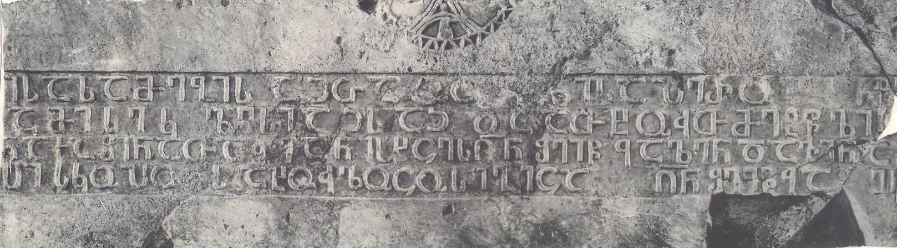

ბოლნისის სიონის 494 წ. საამშენებლო წარწერა დავით ეპისკოპოსისაBolnisi Sioni Cathedral 494 year, building inscription of Bishop David
ბოლნისის სიონის 494 წ. საამშენებლო წარწერა დავით ეპისკოპოსისა
Bolnisi Sioni Cathedral 494 year, building inscription of Bishop David
შინაარსი / Summary
საამშენებლო Building
ბიბლიოგრაფია Bibliography
- შოშიაშვილი, 1980, 64-66
- სარჯველაძე, დანელია, 1997, 7-16
- მუსხელიშვილი, 1938, 325-326
- ჩუბინაშვილი, 1940, 68-69
- ამირანაშვილი, 1944, 140
- აბულაძე, 1949, 2-3
- შანიძე, იმნაიშვილი, 1949
- თარხნიშვილი, 1950, 249-250
- ბაქრაძე, 1953, 1, 23-24
- MIA CSCO Vol 166, 1,9
- ამირანაშვილი, 1958, 4
- წერეთელი, 1960
- კეკელიძე, 1960, 418-419
- კეკელიძე, 1960
- გამყრელიძე, 1967, 14, 20
- ძიძიგური, 1968, 8-9
- ძიძიგური, 1969, 16-17
- აბულაძე, 1973, 6-7
- სილოგავა, 1970, 86-87
- შანიძე, 1975, 30
- პატარიძე, 1984, 140-159
- მჭედლიშვილი, 1984, 100-114
- მაჭავარიანი, 1985
- ყიფიანი, 2011, 666-675
კრიტიკული გამოცემა Interpretive Edition
შეწევნითა წმიდისა სამების აჲთა ო ც წლისა პერო ზ მ ეფ ი სა ზე
ვიწყე შენებაჲ ამის ეკ ლესიაჲსაჲ და ათხუთმეტ წლის ა შ(ემდგომა)დ
განვასრულე ვინ აქა შინა თაჳყანისხცეს ღ(მერთმა)ნ შეიწ ყალენ და ვინ ა მის
მ(ა)შ(ენე)ბ(ე)ლსა დ(ავი)თ ეპისკოპო სსა ხულოცოს იგიცა ღ(მერთმა)ნ შეიწყა ლენ ი(ყავნ) ი(ყავნ)
დიპლომატიური გამოცემა Diplomatic Edition
ႸႤႼႤႥႬႨႧႠ ႼႫႨႣႨႱႠ ႱႠႫႤႡႨႱ ႠჂႧႠ Ⴍ Ⴚ ႼႪႨႱႠ ႮႤႰႭ Ⴆ Ⴋ ႤႴ Ⴈ ႱႠ ႦႤ
ႥႨႼႷႤ ႸႤႬႤႡႠჂ ႠႫႨႱ ႤႩ ႪႤႱႨႠჂႱႠჂ ႣႠ ႠႧႾႳႧႫႤႲ ႼႪႨႱ Ⴀ ႸႣ
ႢႠႬႥႠႱႰႳႪႤ ႥႨႬ ႠႵႠ ႸႨႬႠ ႧႠჃႷႠႬႨႱႾႺႤႱ ႶႬ ႸႤႨႼ ႷႠႪႤႬ ႣႠ ႥႨႬ Ⴀ ႫႨႱ
ႫႸႡႪႱႠ ႣႧ ႤႮႨႱႩႭႮႭ ႱႱႠ ႾႳႪႭႺႭႱ ႨႢႨႺႠ ႶႬ ႸႤႨႼႷႠ ႪႤႬ Ⴈ Ⴈ

ბოლნისის სიონის 494 წ. საამშენებლო წარწერა დავით ეპისკოპოსისა
{'ka': 'წმინდა სამების შეწევნით, პეროზ მეფის გამეფებიდან მეოცე წელს დავიწყე ამ ეკლესიის შენება და თხუთმეტი წლის შემდგომ დავასრულე.\n ვინც აქ თაყვანისცეს, იგი შეიწყალოს ღმერთმა და ვინც ამ ეკლესიის მაშენებლის, დავით ეპისკოპოსისთვის, ილოცოს, ისიც შეიწყალოს ღმერთმა, ამინ, ამინ.'}
{'default': 'ნოდარ შოშიაშვილის ქართული წარწერების კორპუსის მიხედვით #2. წარწერას განკვეთილობის ნიშნები არ ახლავს. სიტყვები ერთმანეთისაგან არ არის დაცილებული.\n ქარაგმის ნიშნად გამოყენებულია საშუალო ზომის სწორი, განივი ხაზი (გვხვდება ორჯერ: მე-3 და მე-4 სტრიქონებში სიტყვაზე ღ~ნ - ღ(მერთმა)ნ.\n წარწერა პალეოგრაფიული თვალსაზრისით ფრიად არქაულია: თავშეკრულია Ⴁ, Ⴗ და Ⴣ გრაფემები.\n შ ერთ შემთხვევაშია თავშეკრული (შეიწყალენ - მე-3 სტრიქონში).\n ენობრივი თვალსაზრისით საინტერესოა ხანმეტი ზმნური ფორმები: თაჳყანისხცეს და ხულოცოს.\n წარწერის დათარიღება სხვა მკვლევრებთან: 1) V საუკუნის II ნახევარი - ლევან მუსხელიშვილი;\n 2) 502/3 წლები - პავლე ინგოროყვა, აკაკი შანიძე (მეორე წაკითხვა);\n 3) 493/494 წლები - გიორგი ჩუბინაშვილი, ილია აბულაძე, ა. ბაქრაძე, შოთა ძიძიგური, აკაკი შანიძე (პირველი წაკითხვა);\n 4) 493 წელი - შალვა ამირანაშვილი, კორნელი კეკელიძე;\n 5) 477 წელი - შალვა ამირანაშვილი (პირველი წაკითხვა);\n 6) 492 წელი - ალექსანდრე გამყრელძე.'}
<div type="edition" xml:lang="ka" ana="mtavruli" xml:space="preserve">
<ab>
<lb n="1"/><w lemma="ქრისტე"><expan><abbr>ქ</abbr><ex>რისტ</ex><abbr>ე</abbr></expan></w>
<w lemma="განსუენება"><expan><abbr>გა</abbr><ex>ნ</ex><abbr>ო</abbr><ex>ჳ</ex><abbr>ს</abbr><ex>უ</ex><abbr>ენე</abbr></expan></w>
<w lemma="სულ">სოჳ<lb n="2" break="no"/>ლსა</w>
<name nymRef="ვაჩა">ვაჩაჲს<lb n="3" break="no"/>ასა</name>
<name nymRef="გურა"><expan><abbr>გო</abbr><ex>ჳ</ex><abbr>რაჲ<lb n="4" break="no"/>სასა</abbr></expan></name>
<name nymRef="მირა"><expan><abbr>მ</abbr><ex>ი</ex><abbr>რა</abbr><ex>ჲ</ex><abbr>ს</abbr><ex>ა</ex><abbr>ს</abbr><ex>ა</ex></expan></name>
</ab>
</div>